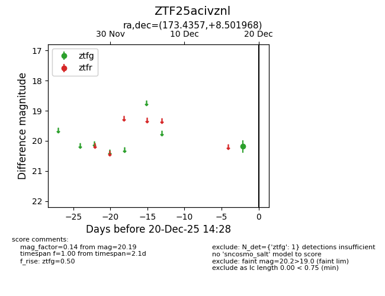
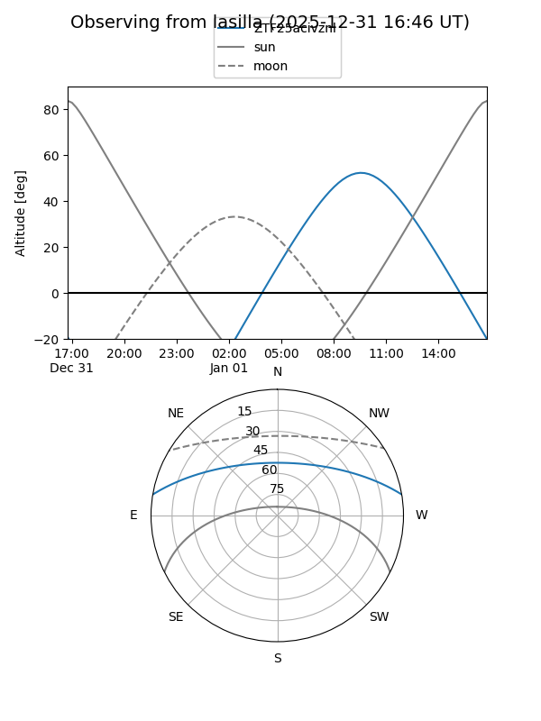
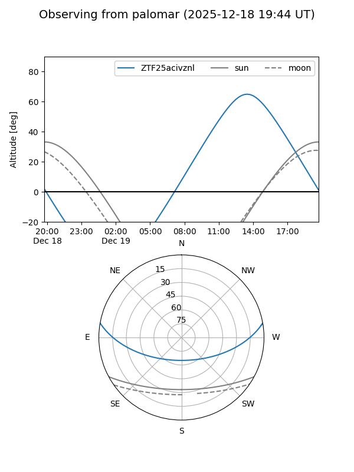

ZTF25acivznl
Target ZTF25acivznl at 2025-12-22 14:31
Aliases and brokers:
FINK: fink-portal.org/ZTF25acivznl
Lasair: lasair-ztf.lsst.ac.uk/objects/ZTF25acivznl
ALeRCE: alerce.online/object/ZTF25acivznl
alt names
ZTF25acivznl (ztf,fink_ztf)
Coordinates:
equatorial (ra, dec) = 173.4357,+8.50197
equatorial (HMS+DMS) = 11:33:44.57,+08:30:07.08
galactic (l, b) = (254.6988,+63.83460)
Flags:
Photometry:
last ztfg=20.19, ztfr=20.22
1 ztfg, 1 ztfr detections
Lightcurve

Visibility


Additional plots